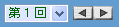
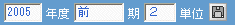
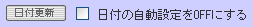
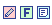

|
(1) 表示変更ボタン
リストボックスで回数を選ぶか，矢印ボタンをクリックして別の回の講義を表示します．

(2) 実施期間記入欄と書き込みボタン
講義の実施期間などを書き込みます．「講義日程の設定」でさらに説明しています．

(3) 日付変更ボタン
講義の実施日を自動設定・書き込みします．「講義日程の設定」でさらに説明しています．

(4) 編集ボタン
講義計画を編集し直します．各回の講義の削除・追加・順序変更などを行います．
資料を掲示時にクリックします．一覧表から新規作成・編集が可能です
課題を掲示する時にクリックします．一覧表から新規作成・編集が可能です
 課題を掲示すると課題名の先頭に表示されます．課題の提出期限・受験パスワードを設定します．
講義メモを記入し保存します，教師のメモですから学生画面には表示されません．
|
|
 講義画面の構成と操作
講義画面の構成と操作
 機能ボタン
機能ボタン
 参照・編集領域(青紫の部分)
参照・編集領域(青紫の部分)
 講義計画・日程領域
講義計画・日程領域